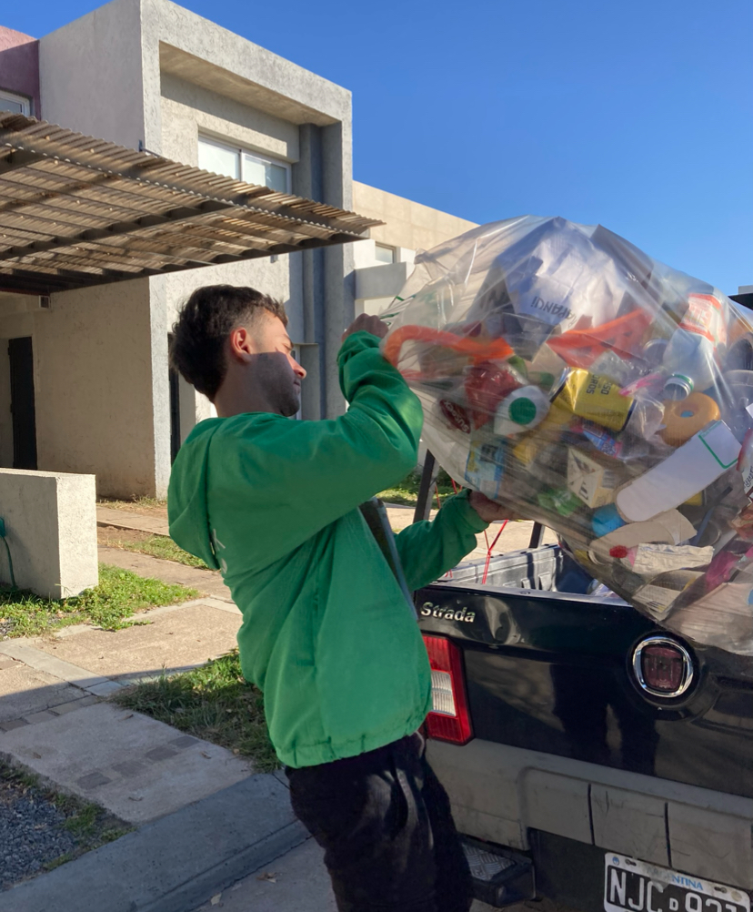

Es un hecho: La separación consciente de residuos logra cambios en los hábitos de consumo
EcoLink
19 de Diciembre 2023
EcoLink celebra su sexto Aniversario reafirmando su misión como empresa.
En el cierre de este 2023 EcoLink, empresa dedicada a la asesoría en sustentabilidad y la recolección de reciclables para empresas y domicilios particulares entre otros servicios, celebra su sexto aniversario afianzando cada vez más la premisa de que el reciclaje no es la solución definitiva para la gran cantidad de consumo que producimos.

Queremos agradecer muy especialmente a tod@s los que nos acompañaron y se acercaron para compartir con nosotros nuestros anhelos para un 2023.
Este aniversario simboliza una celebración de grandes logros alcanzados, y es un recordatorio de cómo gradualmente la empresa ha alcanzado su objetivo fundamental: fomentar una nueva conciencia en base a la manera en que consumimos y gestionamos nuestros residuos.
Contrarrestando las tendencias de reciclaje convencionales, EcoLink se ha destacado al desafiar la norma de “reciclar más” para intercambiarla por “generar menos". "Esta es y siempre será nuestra misión", afirma Federico Gauna, CEO de la empresa , quien destaca la importancia de un enfoque más reflexivo hacia el consumo.
El Modelo y sus Impactantes Resultados.
Como resultado de una encuesta realizada a su comunidad, se desprenden conclusiones como que la innovadora metodología utilizada por la empresa ha logrado transformar el comportamiento de los ciudadanos. El 37% de aquellos que adoptan la filosofía de EcoLink declaran ser más conscientes en sus decisiones de compra. Además, el 90% ha logrado realizar cambios significativos en sus hábitos de consumo.
Pero, ¿cómo se están logrando estos resultados? El secreto radica en la implementación de bolsas transparentes XL. Éstas permiten a las personas que reciclan en casa, almacenar de manera ordenada y visible sus reciclables durante todo el mes. Este enfoque no solo garantiza la calidad de los materiales reciclables, sino que fomenta la reflexión sobre la cantidad y diversidad de los residuos generados.
“Una vez que observás todo el residuo que colocás en la bolsa, tomás consciencia de la cantidad de materiales que consumís. Ahí se genera el primer click.” , comenta Federico Gauna, La transparencia literal de este enfoque revoluciona la percepción de los ciudadanos sobre sus propios hábitos de consumo y desecho.
EcoLink reitera su compromiso de seguir siendo contracorriente de las modas de reciclaje convencionales. La visión no es sólo reciclar, sino inspirar a la comunidad a consumir de manera más reflexiva y responsable.
“Nos proyectamos hacia el futuro con la convicción de que, a través de la conciencia colectiva y prácticas innovadoras como nuestro modelo, se puede forjar un camino más verde para las generaciones actuales y futuras”.
- Durante 2023 recuperamos en empresas 84.000 kg de materiales reciclables y 38.375 litros de material compostable.
- En casas particulares recuperamos 63. 534 kilos de materiales reciclables.
- Y en nuestro Puntos Ecolink 16.150 kilos de reciclables
Sobre EcoLink:
EcoLink es una iniciativa comprometida con la promoción de hábitos de consumo sostenibles y conscientes en la ciudad de Córdoba. Desde sus inicios a fines de noviembre del 2017, EcoLink ha estado liderando el cambio hacia una comunidad más ecológica y reflexiva en sus decisiones diarias. Para obtener más información, visite ecolink.com.ar